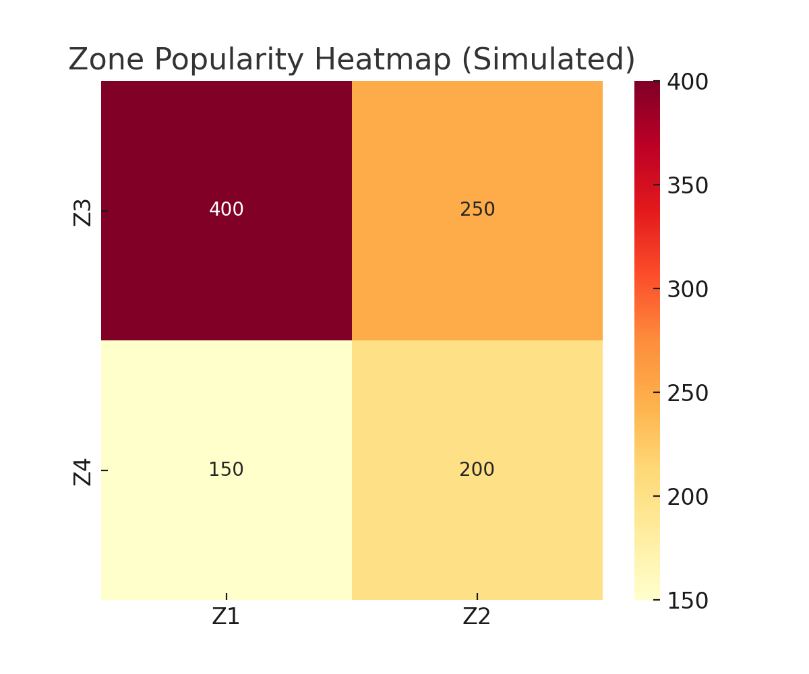

Client Profile
A mall housing 150+ retail outlets, a vibrant food court, and dedicated entertainment spaces.
Problem: The mall management noticed empty areas, long queues during weekends, and uncertainty about whether marketing events were driving sales.
Business Challenges
- Certain areas of the mall consistently saw very low foot traffic, leaving tenants dissatisfied with poor visibility and reduced sales opportunities.
- Long queues during peak hours created customer frustration, leading to walk-aways and measurable revenue loss.
- The effectiveness of promotions and events was unclear, with no insights into whether visitors were engaged, excited, or indifferent.
- Management lacked reliable data on which entrances and exits drove the most value for advertising, sponsorships, and branding opportunities.
Approach (Analytics Conducted)
- Footfall analytics to understand movement and behavior.
- Heatmaps to identify popular vs. dead zones.
- Peak hour analysis by day.
- Event impact analysis before/after events.
- Gate entry/exit tracking.
- Queue detection with emotion proxy.
Key Findings
- Dead zones near cinema exit received 40% less traffic.
- Peak congestion: Saturdays 6–9 PM, Sundays 2–5 PM.
- Live music event increased traffic +22% but only atrium.
- Gate A (near metro) → 45% entries = premium ad spot.
- Food court queues >12 minutes → 15% left without ordering.

Business Recommendations
- Activate dead zones with pop-ups/booths.
- Optimize staffing at peak hours.
- Distribute events across zones.
- Charge higher ad rates at Gate A.
- Use kiosks/temp staff in food court.
Potential Impact
- +10–15% increase in tenant satisfaction.
- Reduced idle hours & overtime, better peak service.
- Improved ROI tracking for events.
- Higher ad revenue from Gate A ads.
- Reduced drop-off at food court → more sales.
Conclusion
Footfall analytics transformed mall operations, marketing, and customer experience. Instead of relying on guesswork, management now makes data-driven decisions to optimize tenant success, improve customer satisfaction, and increase profitability.
The videos are from Pexels.